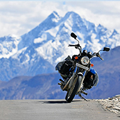

Creative people who can't help but explore other mental territories are at greater risk, just as someone who climbs a mountain is more at risk than someone who just walks along a village lane.
R. D. Laing
Trekking/Mountaineering
Family/Group Tour

Mountain Biking/Rafting
Glaciers and permanent snow fields cover the higher regions of the Himalayas. They are the source of streams that flow into the two big rivers of the region.The Indus flows to the west and through Pakistan into the Arabia Sea. The Ganges and Brahmaputra flow to the east and get together in Bangladesh. They form the largest delta in the world.
Almost every type of climate can be found in the different altitudes of the mountain range. The lower slopes in the south are home to tropical plants and tea.
The Himalayas influence the climate in both India and Tibet. They form a barrier for monsoon winds that blow from the Indian Ocean over India.
The Himalayas are very sparsely populated because of the harsh climate. Most people live on the lower Indian slopes. Many people earn their living as sherpas, guiding tourists and mountaineers to the peaks of the mountain range.
Most of the passes that cross the Himalayas are over 5,000 high. They are covered with snow during the winter period and almost impossible to pass.
Mountain climbing has become the main tourist activity in the Himalaya Mountains. It started towards the end of the 19th century when many mountaineers started climbing the peaks. In 1953 Edmund Hillary and Sherpa Tenzing Norgay were the first to reach Mount Everest, the world’s highest mountain.

Keep close to Nature's heart... and break clear away, once in awhile, and climb a mountain or spend a week in the woods. Wash your spirit clean.
John MuirWeb Design

Annapurna Panorama Trek 9 Days
Kailash Mansarobar Trek 19 Days
Kailash, Mansarovar & Guge Kingdom Trek 20 Days
Khangsung Valley Trek 22 Days
Everest Advanced Base Camp North Side 22 Days
The Himalayas are considered to be the tallest and youngest mountain ranges (only 70 million years young), which were caused by a continental collision between the Indian and Eurasian tectonic plates, resulting in the development of the Himalayan mountain ranges.
Various geological tests conducted by scientists have confirmed that this great mountain range still moves approximately 20mm every year.
Because of this restless or continuous movement of the plates, the whole Himalayan region is prone to various natural disasters like earthquakes, tremors, and landslides.
Although the Himalayan Mountains formed 60 million years ago, Everest’s history actually goes back a lot further.
The limestone and sandstone rock at the summit of the mountain was once part of sedimentary layers below sea level 450 million years ago.
Explorer Noel Odell first discovered the fossils embedded within Everest’s rocks in 1924, proving that the mountain had once been below sea level.
The first rock specimens from Everest were brought back by Swiss climbers in 1956 and by an American climbing team in 1963.
In Hindu religion, the Himalaya is known as the Giri-raj, which means the “King of the Mountains”.
The Hindu people consider the Himalayas as a sacrosanct place and believe it to be the dwelling place of Gods.
It has got mention in the epic Ramayana, Mahabharat, Rig Veda, Skanda Purana and many other Puranas.
Many saints regard the Himalayas as the land of holy practices where perform the penance and worship the Lord.
The Himalayas serve as a natural habitat to some exotic species of animals like the snow leopard, wild goat, Tibetan sheep, musk deer and mountain goats.
To watch the majestic snow leopards, you have to climb the higher altitudes of the mountain.
Besides the animals, there are even many diverse and beautiful species of birds